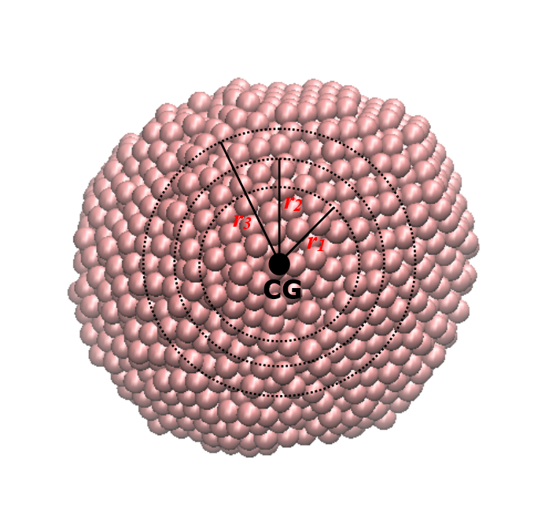
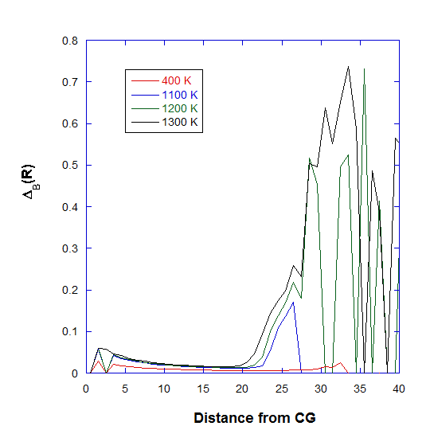

Cluster characterisation - Lindemann (Berry) Parameter¶
This page describes how you can characterise a cluster, for instance, whether it is solid-like or in the molten state. It can be characterised in three different ways:

1. Cluster characterisation: Berry parameter
Clusters are characterised in terms of inter-particle distance fluctuations among the member particles that made up a cluster.
This is defined as follows:
The quatity \({\Delta}_B\) is called inter-particle distance-based Lindemann parameter, or the Berry Parameter where r is the distance between particle i and j and A is the total unique pairs of N particles.
The parameter is obtained by averaging over all the configurations. So, Berry parameter is actually a measure of fractional deviation of the average distance per particle pair. A simple solid cluster would have a value \({\Delta}_B\) of ~0.10-0.15. The smaller the value, the more rigid the cluster.
Note
Cluster characterisation is more suited for well-defined clusters in the system. If there are several clusters and they are constantly forming and destroying, then \({\Delta}_B\) may only reflect the everage effects, depending on the stability of clusters.
The cluster characterisation option takes three values: the on/off switch, atom_label and Molecule_label. For example, consider MD simulations of a silver nanocluster in gas phase, which consists of 4000 atoms, the relevant options in the control file are shown below:
..
..
--- Atom Range Definition and overall conditions for analysis as below.
1 4000 * Range of atom index (Group A). This must always define.
none * Range of atom index (Group B), if applicable. Or put 'none'.
1 * Analysis type: 1=atom-based 2 = molecule-base
1 * Atom-based analysis criteria: 1=all 2=only atoms within molecules 3=only atoms between molecules
none 16 * Molecule-base analysis: name and no of atoms per molecule in Group A (MOLECULE A1)
none * Molecule-base analysis: name and no of atoms per molecule in Group A (MOLECULE A2, or 'none')
none * Molecule-base analysis: name and no of atoms per molecule in Group B (MOLECULE B1, or 'none')
none * For molecule-base analysis: name and no of atoms per molecule in Group B (MOLECULE B2, or 'none')
all * Range of MD time (ps) samples: t1 t2 (put 'all' if all samples to be included).
1 * Assign all atoms with unit mass = 1.0 (1=yes, 0=no)
0.0 0.0 0.0 * Translation marix on coordinates:x y z (assume orthorhombic cell)
0 * Periodic boundary? 0=no, other number = type of box (DLPOLY), auto = obtain from HISTORY
40.0 0.000 0.0000 * Cell vector a (x, y, z)
..
..
..
--- Structural analysis
1 * Activate analysis (1=yes 0=no)
test.out * Output file
1 * Number of every configuration to skip
0 * Reduced moments of distributions (p = 4, 6 and 8)
0 * Block analysis (1= yes, 0=no)
0 0 * Molecular matching (1=yes, 0=no) and output option (1=yes and 0=no).
none * Template file for matching (if 'none', first config in input file will be used).
0 * Center of gravity of Group, or every molecule (1=yes, 0=no)
0 * Radius of gyration (1=yes, 0=no)
0 * Asphericity (1=yes, 0=no)
0 3.5 * Cluster analysis (1=yes, 0=no), cutoff
1 AG A1 * Cluster index. (1=yes, 0=no) atom_label molecule_label
0 * System density (1=yes, 0=no)
..
..
Note that, we switch off the priodic boundary (0), to prevent counting of image distances, especially for particles that move too far away from the main cluster body.
The ‘AG’ is the atom_label as in the CONFIG file. Since atom-based analysis is selected with ‘all-atom’ (1) as the analysis criteria, therfore, the Molecule_label is ignored. Below lists the values of \({\Delta}_B\) over different temperatures. These values were obtain from reading the HISTORY files generated for each temperature in MD simulations.
Temperature/K |
\({\Delta}_B\) |
|---|---|
400 |
0.007554 |
1000 |
0.033418 |
1100 |
0.047785 |
1200 |
0.077138 |
1300 |
0.112668 |
Diagram below shows the final structure of the cluster at different temperatures.
{kind=link}
At 400 K, Ag particle is practically a solid, adopting the usuall FCC structure. At around 1100-1200 K, there is a significant increase in Berry parameter, indicating the melting transition, which coincide with the melting point of silver. At 1300 K, the particle begins to disintegrate.
2. Cluster characterisation: Distance-dependant Berry parameter
DL_ANALYSER also calculates the distance-dependant Berry parameters, \({\Delta}_B(r)\) in terms of particles’ distances from the CG of the cluster. In this case, similar equation as shown above is calculated but this time the quantity N refers to the number of particle members that are located within a spherical region of radius r from the CG of the cluster. This is illustrated as shown below:
{kind=link}
DL_ANALYSER repeatedly calculates \({\Delta}_B(r)\) as r increases incrementally, from \(r_1\), \(r_2\) to \(r_3\). Obviously, if r is large enough, then all cluster particles will be included in the calculation and the original \({\Delta}_B\) is recovered. Graph below shows the distance dependant Berry parameter at different temperatures for the Ag nanoparticle.
{kind=link}
Note that, at 400 K, there is a smooth decrease towards an asymptoptic value. At higher temperatures, the outer layer of the cluster begins to liquify, as indicated by the large increase in \({\Delta}_B(r)\) at around 20-25 angstrom.
3. Cluster characterisation: Berry parameter radial distribution
In addition, DL_ANALYSER also calculates Berry parameter radial distribution profile, \({\Delta}_B(R)\), to assess the cross sectional cluster structure. This is quite similar to the more familiar radial distribution function. In this case, DL_ANALYSER only calculates the Berry parameter for particles that are confined within between two succesive r values (for example, R = \(r_2 - r_1\)). Graph below shows the distribution profile for the Ag nanoparticle.
{kind=link}
Note that, at 400 K, the distribution profile maintains a steady small value throughout the cluster region, indicating the solid nature of the material. At higher temepratures, increased fluctuations at outer regions are due to increased agitation of atoms while some atoms practically ‘fly out’, indicated by wild profile variations beyond the cluster region.